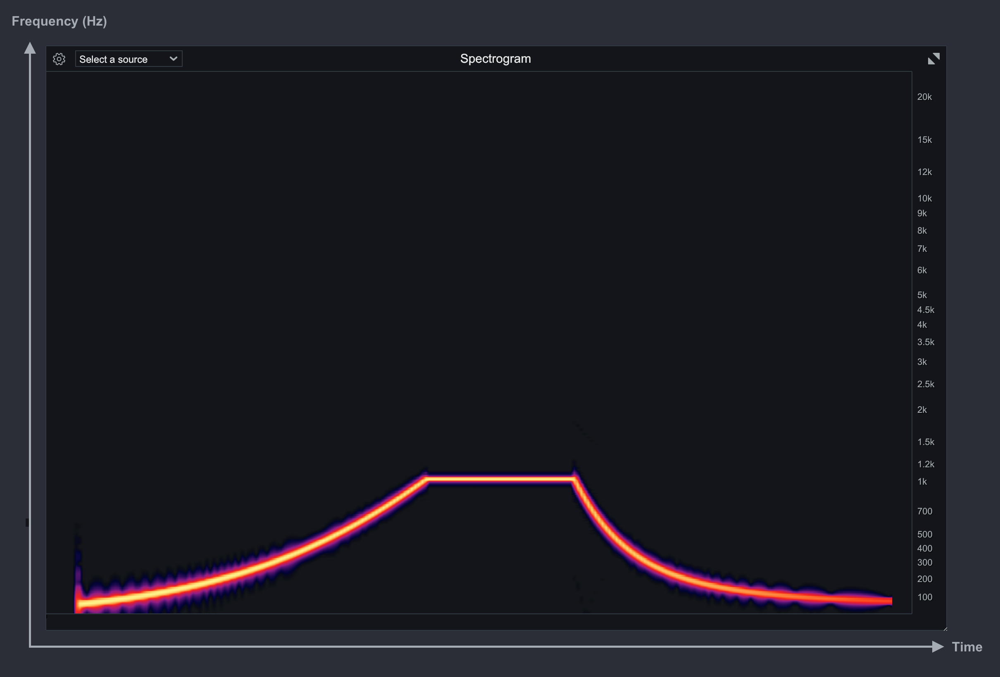
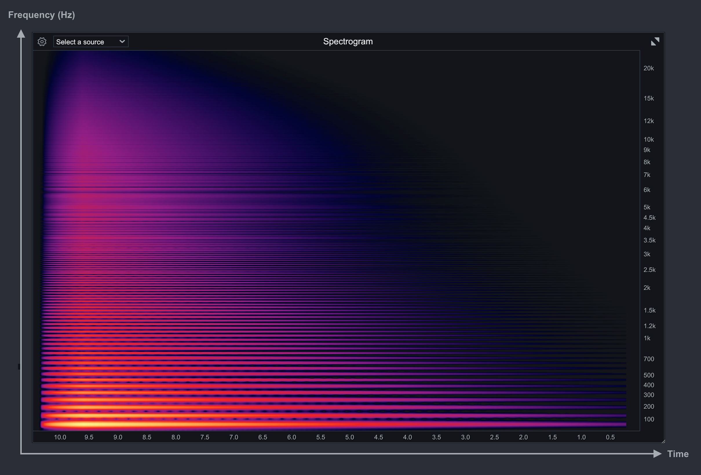
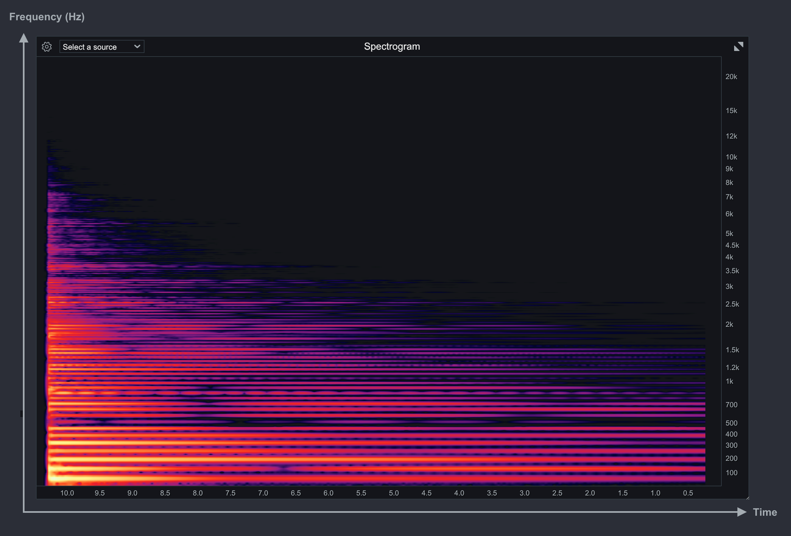
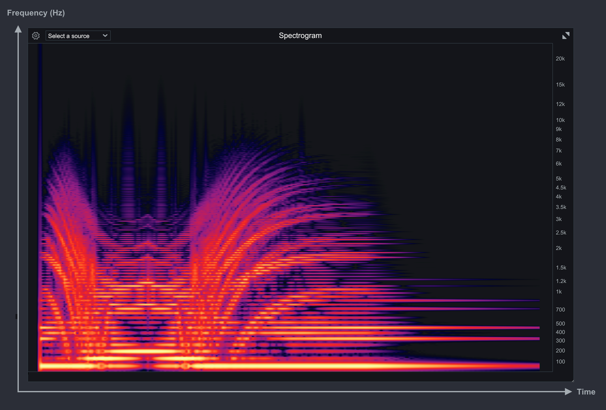

1. 什么是包络（Envelope）
1. 什么是包络（Envelope）
在上一节中，我们系统学习了声音的频率成分与泛音列。但构成音色个性的另一个不可或缺的决定性维度，便是音量随时间的动态变化。以军鼓（Snare Drum）的声音为例：有的军鼓“嗒！”的一声干脆利落地瞬间消散，而有的军鼓则“嚓——！”地带有一段颇为悠长发散的残响余音：
在每一次敲击的微观时间线中，音量在何时达到爆发顶点、随后又以何种形态减弱衰退？这一动态轨迹不仅对乐器的音色质感产生决定性重塑，更深刻主宰着听众对节拍节奏与律动（Groove）的身体感知。 如果观察声波的时域波形图，音量所勾勒出的起伏外轮廓一目了然。我们将这种追踪音量随时间动态演变的能量轮廓曲线，称为振幅包络（Amplitude Envelope），日常通常简称为“包络（Envelope）”。

“包络”一词在合成器音色设计（Sound Design）领域人尽皆知，因为在合成器调制音色时，精心设计音量的动态变化是最为核心的地基工序。
例如在 Clean Bandit 乐队的名曲《Symphony》开篇处，那段清澈温柔的引子音色，本质上是由纯正的正弦波（Sine Wave）合成的。正弦波本是没有任何高频泛音的极简纯音，若单看频响成分，理应听起来单调乏味如听力测试仪一般；然而通过赋予它类似于打击乐马林巴琴槌敲击般的包络形态，瞬间化腐朽为神奇，呈现出极具呼吸感与有机质感的优美音色。这深刻印证了一点：哪怕基础频率成分完全一致，包络形态的不同就足以让音色的听觉印象发生脱胎换骨的剧变。
上面这一串音频样本全部由单一正弦波构成，彼此唯一的区别仅仅在于包络曲线的设计。每一颗音符都散发着截然不同的生命性格！在上一节的实验中，我们曾演示过把高次泛音一刀切除后声音就会像纯净水一样索然无味，在此我们得坦白道歉——那句话其实只说对了一半。哪怕是毫无泛音修饰的纯正弦波，只要施以巧妙的包络塑形，同样能赋予其鲜明动人的灵魂与性格。 尤其在任天堂红白机（FC/NES）等早期8位游戏机时代，硬件能够调用的波形种类极度匮乏。即便在如此严苛的机能限制下，先驱作曲家们依然凭借对包络的极限雕琢，在游戏中变幻出了丰富多彩的生动音色：
使用相同波形塑造多元音色：
如果说上一节中我们将频率成分比喻为食物的“味道调料”，那么包络就好比食物的“口感质地”。水与冰块、大米与年糕、通心粉与拉面——即便化学调味完全相同，口感维度的截然不同足以带来天差地别的享用体验。在声音的世界中，振幅包络正是塑造听觉“口感”的决定性魔法。
2. ADSR 经典包络模型
真实声波的包络曲线千姿百态，像人声歌唱或长笛吹奏，完全可以随着气息力度的起伏任意进行连续微调。但在经典模拟合成器体系中，为了工程化精准掌控音量流变，人类将其抽象解构为4个核心阶段参数。理解这四大参数，是把握一切声音动态的通用钥匙：
起音（Attack）
绝大多数乐器在发音瞬间就会立即迎来音量的峰值脉冲；但某些发声形态的音量峰值却会或多或少滞后到来。从“乐器开始发声启动，到音量攀升至最大峰值所耗费的时间”，被称为起音时间（Attack Time / 冲击阶段）。 例如某些环境音效或合成铺底（Pad），音量往往呈现“呼——”地缓缓由弱渐强的形态：

这种发声过程，我们称之为起音“较慢”或“较软”。再比如地鼓（Kick / 底鼓），表面上看起来都是发音瞬间爆发至顶峰，但在起音微观的“瞬态锐度”上仍存在着极其微妙的质感差异：
对比这两枚地鼓的音色，第二个样本在声音启动瞬间隐隐透着一丝迟钝与肉感。将两者的瞬态波形极度放大仔细比对：
第一枚地鼓：瞬时达到尖锐峰值

第二枚地鼓：峰值到来有微秒级滞后

显而易见：第一枚地鼓在发声的极短瞬间内垂直刺入最大振幅；而第二枚地鼓的波形则呈现微小的斜率爬坡，多耗费了少许时间才攀至峰值。 在音频工程中，我们会形容第二枚地鼓的起音“较钝”或“冲劲较弱”。人声主唱的瞬态同样对 Attack 极为敏感，咬字若缺乏瞬时爆发，听感上就会显得含混软弱。 当然，起音较钝绝非劣质的代名词，关键取决于音乐语境的审美诉求。在某些 Hip-Hop 风格中，这种低沉浑厚、钝击感十足的脏音色（Dirty Kick），反而透着不可替代的街头酷劲。
释音（Release）
音量达到顶峰之后，最终必然会走向衰退并归于寂静。有的声音戛然而止，有的声音则余韵悠长。从“演奏动作结束（如松开琴键或停止吹奏），到声音彻底衰减至零所耗费的时间”，被称为释音时间（Release Time / 释放阶段）。

以古刹鸣钟为例：在撞钟瞬间音量立刻达到绝对最大值，因此其起音时间几乎为零；随后悠扬的轰鸣声在空气中久久回荡、持续衰减，画出一条长长的滑梯曲线——这条“滑梯”的漫长延伸区间，正是释音时间。 大钟是释音极长的典型代表。不同乐器的释音时长跨度极大，是确立其音色辨识度的核心指纹：
上面依次是马林巴（Marimba）、木琴（Xylophone）与颤音琴（Vibraphone）的弹奏：马林巴与木琴的释音非常干脆短促，而金属材质的颤音琴其释音则悠扬绵延得多。
延音（Sustain）
像大钟这类敲击乐器，一旦敲完演奏动作即告终结；但在管风琴等键盘乐器中，演奏包含“按下琴键 → 松开琴键”两个清晰的物理阶段。管乐器同样存在“持续吹气 → 停止呼气”两个阶段。只要气息不竭或手指不离键，声音就能一直保持发声。这种“持续保持发声期间所维持的相对稳定音量”，被称为“延音电平（Sustain Level / 保持阶段）”。

管风琴在按下键的整个期间，音量始终与起音初始保持完全一致的满格状态，因此其延音电平为100%（最大值）。这在乐器界属于特例；对于管乐器而言，对比发声瞬间倾注全力的爆发性喷吐冲击，在持续平稳发声期间，音量通常自然会有所回落，毕竟乐手不可能全程用尽肺活量极限吹奏：

这是小号在强劲吐音起奏后略微回撤音量的示范。此时其持续稳定阶段的延音电平便处于相对较低的水准。钢琴在踩下延音踏板后也能延展声音，其包络同样呈现出类似的自然衰减轨迹：
琴槌击弦刹那的爆发力过去后，持续共鸣的振幅会有所下降。在现实乐器中，能够轻松无限期维持100%延音水平的，除了管风琴外，主要就是小提琴等拉弦乐器或电子合成器了。而打击乐器由于无法做出“持续按住不放”的物理动作，在严格意义上不存在真正的延音阶段。
衰减（Decay）
在具备延音特性的乐器中，必然会衍生出一个衔接性的关键环节——即音量在“起音（Attack）”达到最高峰值后，向平稳的“延音（Sustain）”状态过渡下落所经历的时长。 同样是管乐合奏，有的声音在峰值过后以极快的速度骤然下沉：
而有的则经历悠长舒缓的过渡，音量才慢条斯理地回落稳定：
这段“从最大峰值音量，衰落至稳定延音电平所耗费的时间”，被称为衰减时间（Decay Time）。快速回落的声音称为“短衰减”，缓慢过渡的声音则称为“长衰减”：


“Decay（衰减）”与“Release（释音）”虽然都涉及音量的下行衰退，但两者的本质截然不同：Decay 是指仍在持续演奏过程中（按住琴键时）内部发生的音量回落；而 Release 则是指演奏动作彻底终止之后（松开琴键后）外界残余声音的消逝。
理论抽象模型与现实世界的交融
需要谨记的是：ADSR 最初是为了合成器调制音色而人为归纳的4参数抽象模型。在复杂的现实物理乐器演奏中，往往无法生硬刻板地被这四个词汇完全框死。 例如吉他拨弦或钢琴击弦，即便你使劲按住琴弦或踏板企图“持续延音”，物理能量依然会不可抗拒地缓慢衰退：

钢琴上配备了著名的“延音踏板（Sustain Pedal）”，即便松开琴键声音也能长久回荡。虽然物理规律注定声音在缓慢下行，但在音乐心理感知上，只要它能延展足够久，大家普遍依然会将其认定为处于“Sustain 延音”阶段。 再如爵士乐中的大铜镲（Cymbal），敲击后那声宏大的“嚓——”音，在敲完后自然散发，看似属于典型的“Release（释音）”：
但听完打击乐手的讲解就会明白：敲击后双手的体态操控与余震控制同样属于“演奏动作”神圣的一部分，直到乐手用身体将镲片捂死止音那一刹那，“演奏行为”才算正式终结。从这个视角看，那声“嚓——”又带着强烈的“Decay”属性。这些术语原本就是为了电子合成器定制的工程语言，在套用至传统自然声学乐器时，切忌钻牛角尖，抓住本质感受即可。
ADSR 体系大统领
至此，核心的四大参数已悉数登场。按照时间展开的线性顺序归纳整理如下：
| 阶段（Stage） | 英文全称 | 核心含义定义 |
|---|---|---|
| 起音（Attack） | Attack Time | 从演奏发声启动，到音量攀升至最大峰值所耗费的时间 |
| 衰减（Decay） | Decay Time | 音量达到峰值后，平滑回落过渡至稳定延音电平所耗费的时间 |
| 延音（Sustain） | Sustain Level | 保持持续发声状态时所维持的音量电平（通常用占峰值的百分比表示） |
| 释音（Release） | Release Time | 演奏动作终止（松手/断气）后，声音由延音电平衰减至完全寂静的时间 |
这四大阶段各取首字母，便构成了声学界举世闻名的简称——ADSR。在工程中，每一个阶段通常被称为一个阶段（Stage），如“Attack Stage（起音阶段）”、“Sustain Stage（延音阶段）”等。

重点提示：在这四者中，唯独 Sustain（延音）指代的是“音量电平高度（Level）”，其余三者（A、D、R）指代的全部是“时间跨度（Time）”。为了在工程推演中更严谨区分，有时会将延音阶段的音量明确称为“Sustain Level（延音电平）”，而将按住琴键持续保持的时长称为“Sustain Time（延音时长）”：

这四大核心支柱，构成了剖析一切振幅包络的黄金坐标系。无论是合成器还是现实世界的真实原声乐器，包络都是主宰音色灵魂的核心动力学参数。
3. 声学语图 / 频谱瀑布图（Spectrogram）
行文至此，上一节阐述的“静态频率成分”与本节解析的“时域振幅包络”，已共同构成了音色物理属性的两大基石。 然而在真实的物理世界中，音量变化绝非单纯作用于声音的整体全局响度，而是呈现为各个离散频段各自为政、独立而复杂的差异化起伏——例如击弦瞬间爆发出猛烈的白噪高频冲激，随后超高次泛音迅猛衰退，低频基音却悠长回荡。只有持续输出死板波形的合成器振荡器，才能勉强维持频响的绝对恒定。 因此，为了将不同频率成分随时间奔腾流变的立体全貌一网打尽，声学界引入了一种极为强悍的联合可视化视图——声学语图 / 频谱瀑布图（Spectrogram）。百闻不如一见，让我们一睹其实际动态：
音高起伏的正弦波语图：


缓慢衰减的锯齿波语图：


声学语图以三维信息无缝映射声音的时频流动：
- 横轴（X轴）：代表时间轴，从左至右线性向前流逝。
- 纵轴（Y轴）：代表频率轴，越往上方代表频率越高。
- 色彩明暗（Z轴）：代表该频率能量的强弱，越偏明亮金黄代表能量越强，深暗紫色则代表微弱或虚无。
因此，仅包含单一基音频率的正弦波，在语图上几乎是一片漆黑，唯有正中间那条发声频率的线条如同极光般发亮；随着音高滑升线条向天际攀援，音高滑落线条随之俯冲下坠。 相比之下，包含丰沛泛音列的锯齿波一旦弹响，整张图谱瞬间被密集的水平光带彻底点亮；仔细观察，随着频率向极高频延伸，光带的色泽逐渐暗淡，精准印证了高次泛音能量递减的声学规律。 若观察更具生命质感的复杂声音，语图呈现的动态则更加震撼瑰丽：
真实原声钢琴的语图：


滤波调制动态合成器的语图：


原声钢琴的图谱展现出了机械乐器无可比拟的丰富微动态与有机波澜，泛音能量的消散非线性而富有层次，正是这种细腻入微的时频流动赋予了钢琴温润如玉的人性化质感。而合成器通过低通滤波器（LFO/Filter）的反复扫频，在图谱上勾勒出扭曲波动的奇幻纹理，甚至巧合地浮现出一张宛如小鸡幽灵般的怪诞面孔……🐓 声学语图正是为转瞬即逝的声音绘制的精准“声学肖像画”。 除了分析单个音符，现代工程更习惯将整首完整混音工程直接送入语图分析。对于传统五线谱根本无从记录的前卫现代电子音乐而言，语图已成为不可或缺的分析罗盘：
这是先锋电子音乐泰斗 Aphex Twin 传奇曲目《Equation》的全曲语图分析。五线谱在这类充满噪波流动的作品面前彻底失灵，语图却将一切结构展露无遗：超低音底鼓轰鸣时底部爆发刺目金光，空灵段落则全域转为暗夜。在曲目终段（尤其是 4:04 之后），甚至利用反向频域算法，在语图里硬核彩蛋般绘制出了一张清晰逼真的人脸画像！ 在当今欧美最前沿的现代音乐学术论文中，用语图替代五线谱剖析 EDM 与流行音响已成为主流范式——在某种意义上，这正是属于现代电子时代的“新五线谱”。
4. 音乐三要素的反思，与理论的盲区
升级你的听觉感知
在“绪论”中我们强调过：“如果不掌握描述声音的语汇，你的耳朵就无法看透音乐，更无法将审美信息高效存入记忆”。本节讲解的振幅包络正是这一论断的最佳佐证。仅仅是掌握了这套概念，你听音乐时能接收到的信息通量便将迎来几何级数的暴增：
这是一批在缺乏声学常识的外行听来或许会抱怨“不知所云、毫无旋律”的前卫实验电子佳作。但此刻当你重新屏息倾听，各个声部那鬼斧神工般精雕细琢的微观包络设计必将令你叹为观止：短瞬衰减凸显极致敲击感的起音、冰冷悬停的平板延音、慢速爬坡的幽深吸气感、零释音截断的工业冷冽、先抑后扬的呼吸感……正如绚烂的和弦赋予歌曲和声色彩一样，多姿多彩的振幅包络赋予了音响令人战栗的动态层次。包络从不是孤立的音色问题，它直接统治着乐曲底层的律动呼吸与身体快感。 包络对于音乐具有至高无上的基石地位，甚至可以说是音乐最深层的本质。因为世上或许存在没有和声、没有主旋律、甚至缺乏固定节拍的极端音乐形态，但我们根本无法想象任何完全没有包络特性的音乐。包络本质上是声波振幅能量的起承转合；只要音乐脱胎于空气的物理震动，包络就永远盘踞在音乐最本源的核心脉搏之中。
理论之光，有时亦会遮蔽双眼
市面上的常规音乐理论教材中，关于音色的探讨往往极其吝啬，本网站同样难以在后续篇章中全程兼顾音色细节。但请千百次牢记：这绝不代表音色在音乐中无足轻重！ 事实完全相反：正是因为音色的宇宙实在太过深邃浩瀚、主观微妙，现有的纸面理论体系根本无力将其完整规格化，才不得不被迫在理论建构时将其抽象剔除。 举个最简单的例子：仅仅是同时弹响同一个和弦，在原声木吉他与人声阿卡贝拉上的听觉表现有着天渊之别。某些在失真电吉他上听起来浑浊不堪的和声碰撞，放在合成管风琴上却可能绽放出圣洁深邃的绝美神性。如果在乐理推导中把每一个乐器的泛音包络变量全部算进去，整套系统瞬间就会因过于庞大而彻底瘫痪。因此学院派理论只能狠心削去这些细微血肉，只抽取纯粹的音高骨架来建立模型。 人们常说“旋律、和声、节奏是音乐的三要素”。但这所谓的“三要素”，绝不像包饭团的“米饭、馅料、紫菜”那样由三个互不相干的独立部件简单拼接即达成100%。旋律本身天然蕴含着节奏切分与和声倾向，三者本就犬牙交错、浑然一体；而且哪怕将这三者全部相加，也远远涵盖不了音乐的完整灵魂。 所谓“音乐三要素”，与其说是音乐的本源“构成组件”，不如说是人类为了建立理论而勉强从庞大混沌的音乐宇宙中强行切片提炼出的“抽象剖面”而已：


将这三要素理解为审视音乐的“观测视点”最为贴切。本网站虽然在后文同样划分为旋律篇、和弦篇与节奏篇，但这绝不意味着仅仅依靠这三者就能穷尽音乐的全部奥秘。 深研音乐理论久了，初学者往往极易陷入一种职业病——不自觉地把目光全部局限在被理论符号化的狭窄轨道上。但请永远在心底保留一份敬畏：那些无法被绘制在乐谱纸上的声波微动态与泛音呼吸，往往才是音乐灵魂最深沉的寄宿之所。带着这份超然的清醒，我们在预备篇的终章郑重交代了这两篇关于音色的声学探索。
核心小结
- 振幅包络（Amplitude Envelope）是用曲线具象化描摹音量随时间动态涨落的能量形态。
- 在合成器与声学工程中，包络被经典拆解为起音（Attack）、衰减（Decay）、延音（Sustain）、释音（Release）四大阶段（ADSR），这一模型同样是剖析所有现实乐器动态特性的绝佳通用标尺。

至此，整部预备篇正式宣告圆满通关！从这里开始，和弦篇、旋律篇、节奏篇的浩瀚旷野已向你全面敞开。按照你内心的节奏自由抉择探索路线，在实战创作中让鲜活灵动的音乐理论化为你展翅翱翔的羽翼吧！